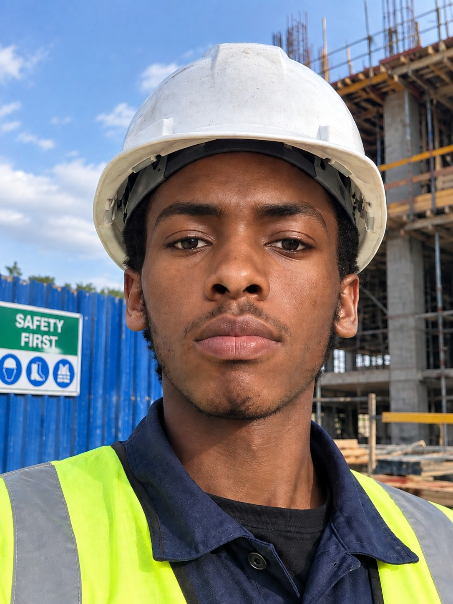

01
WEB · BUSINESS
Construction
Business Platform
A concept for a modern construction company brand and website — focused on trust, strong foundations and technology.
↗ENGINEERING STUDENT · NAIROBI
Hello there! My name is Newton Wanyoike, I'm a student pursuing Bachelor of Technology in
Civil Engineering student at The Technical University of Kenya developing a foundation in structural
engineering while teaching myself how tech can make ideas easier to build,
share, and scale.
For the longest time, i've been fascinated by structures, technology, design,
and the process of turning curiosity into useful things.

01 / ABOUT
I enjoy going beyond the syllabus — from programming and web development to engineering software, working on my small personal projects, exploring big business ideas, listening to music and reading books that make me question how I see the world.
I started learning web development recently and judging by the works I've done (including this one), I can proudly say that I have
made a massive amount of progress. I have also acquinted myself with some of the technical drawing and analysis software
and worked on a few projects. These are not claims of mastery — they're the areas I'm actively developing.
My long-term goal is to build a career in the construction industry combining engineering, technology and entrepreneurship
to design practical, economical and reliable solutions to some real world problems
Here's what you need to know about me and my engineering journey
02 / SELECTED WORK
A growing collection of experiments, ideas and engineering work.
WEB · BUSINESS
A concept for a modern construction company brand and website — focused on trust, strong foundations and technology.
↗PROGRAMMING
Learning the fundamentals of C through functions, arrays, strings, structures and engineering-flavoured problems.
↗ENGINEERING
Exploring CAD, technical drawing, BIM concepts and other engineering software & tools used to turn engineering ideas into workable designs.
↗PERSONAL SYSTEM
A personal approach to studying, reading, fitness, reflection and skill-building — designed around consistency rather than perfection.
↗03 / CURRENTLY LEARNING
Engineering gives me the problem. Technology gives me more ways to solve it.
These are not claims of mastery — they're the areas I'm actively developing.
...The most important thing is to never stop questioning.
— A mindset worth carrying into engineering.04 / CONTACT
I'm open to conversations about engineering, technology, projects, learning and interesting ideas. Click the links below to get in touch!